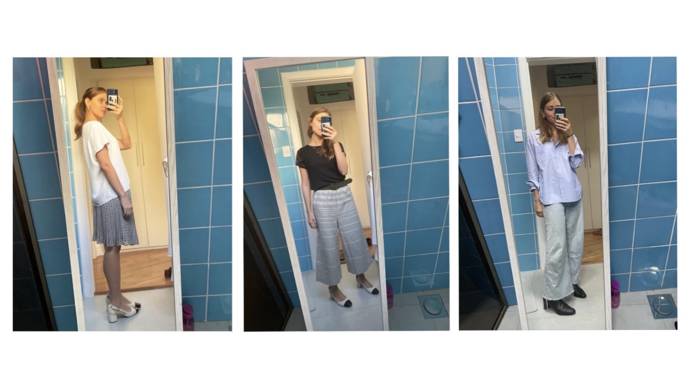

Looks de trabalho & meta de ano novo
É janeiro e uma das minhas metas pra esse ano é ir ao escritório com mais frequência. Leia-se: duas vezes por semana. Basta. E uma das motivações para atingir esse objetivo são os lookinhos do dia -os close friends acompanharam :) e por isso acho que sou oficialmente blogueira pois ter um blog não é o suficiente, pra ganhar o título tem que fazer os looks do dia :P
 Foto: Seleção de looks usados esse mês, pardon pelo espelho sujo :P Gosto dos looks soltinhos. Como todo o meu guarda-roupa, tem muito uniqlo, renner e myfots.E uma blusa herdada da minha tia que deve ter mais de 10 anos de existência.
Essa meta surgiu, pois, além de ser recomendação do RH (rs) acabo sendo mais focada e produtiva lá, gosto de ver o pessoal e fazer algumas reuniões presenciais, se possível. Acho importante ter essa visibilidade, mas acabo chegando morta em casa depois do trabalho e ainda não consigo entender como a gente sobreviveu tanto tempo sem o remoto. Loucura.
Ao mesmo tempo que quero ir mais vezes ao escritório, também me pego pensando que tenho liberdade suficiente pra trabalhar do nordeste, por exemplo. Acordar e mergulhar no mar; ou de algum lugar perto da floresta. E que a vida é muito curta pra viver em São Paulo o tempo todo. Por isso, se cumprir minha meta de escritório por 3 meses, quero tirar um tempo (1 semana? 1 mês?) trabalhando remoto de algum outro lugar longe da cidade grande. Planos.
E vocês? O que querem fazer esse ano? Mandem para deveseraquiblog@gmail.com :)